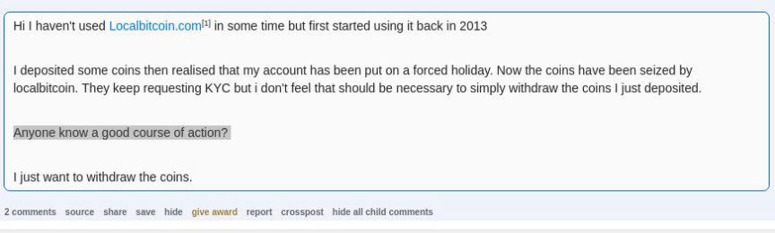
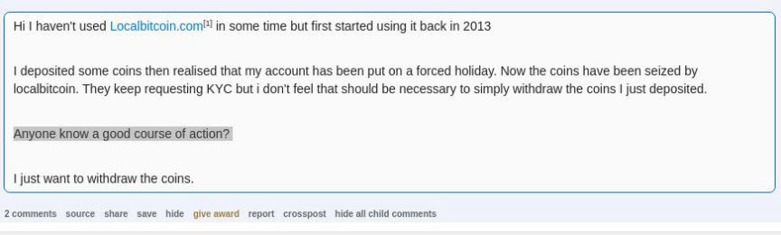

LocalBitcoins Disables Cash for Bitcoin Transactions
~2 min read | Published on 2019-06-03, tagged Exchange using 351 words.
Localbitcoins, one of the services used to purchase bitcoin as anonymously as possible, unexpectedly ended the ability to trade cash for bitcoin. Although users of Localbitcoins have alternative options for buying bitcoin, trading cash for bitcoin was one of the platform’s primary incentives for those concerned with their privacy, such as the users of darkweb marketplaces.
Localbitcoins, since early this year, has been implementing new anti-money laundering (AML) and know your customer (KYC) measures and protections. Although they have not addressed the recent death of cash transactions, their blog posts clearly detail the company’s plans to meet the new AML requirements for “cryptocurrency providers” as voted on by the Finnish Parliament in March 2019. The AML changes as defined by the Virtual Currency Service Providers Act will not come into effect until November 2019, according to the company’s own blog post.
In the latest announcement (March 25) on the Localbitcoins.com blog, the company wrote:
LocalBitcoins is working on improvement measures that will allow us to provide a safer and better service conforming to the regulations. On Monday 18th March, we have launched a new account registration process where users can verify basic information already during sign-up, making it easier for the newcomer to find trading partners from day 1 and increasing the number of suitable customers to advertisers as well as inhibiting the creation of illegitimate accounts.
Their new KYC requirements are already making the platform more difficult to use for many users. The Localbitcoins subreddit is filled with complaints about KYC, account closures, and bitcoin seizures.

Although they announced new identity verification requirements for users of Localbitcoins, they never so much as suggested the removal of cash-based trading. With the company’s forums shut down and the Localbitcoins subreddit fairly inactive, there are very few channels through which one can get updates on the status of the change. It is not clear whether or not the change is permanent or a simply a temporary measure implemented during a transitional period.
Given the direction the company is taking, though, cash trades are not likely to return, leaving even fewer options for purchasing bitcoin anonymously.
Localbitcoins, since early this year, has been implementing new anti-money laundering (AML) and know your customer (KYC) measures and protections. Although they have not addressed the recent death of cash transactions, their blog posts clearly detail the company’s plans to meet the new AML requirements for “cryptocurrency providers” as voted on by the Finnish Parliament in March 2019. The AML changes as defined by the Virtual Currency Service Providers Act will not come into effect until November 2019, according to the company’s own blog post.
In the latest announcement (March 25) on the Localbitcoins.com blog, the company wrote:
LocalBitcoins is working on improvement measures that will allow us to provide a safer and better service conforming to the regulations. On Monday 18th March, we have launched a new account registration process where users can verify basic information already during sign-up, making it easier for the newcomer to find trading partners from day 1 and increasing the number of suitable customers to advertisers as well as inhibiting the creation of illegitimate accounts.
Their new KYC requirements are already making the platform more difficult to use for many users. The Localbitcoins subreddit is filled with complaints about KYC, account closures, and bitcoin seizures.

Reddit Users Complain About LocalBitcoins
Although they announced new identity verification requirements for users of Localbitcoins, they never so much as suggested the removal of cash-based trading. With the company’s forums shut down and the Localbitcoins subreddit fairly inactive, there are very few channels through which one can get updates on the status of the change. It is not clear whether or not the change is permanent or a simply a temporary measure implemented during a transitional period.
Given the direction the company is taking, though, cash trades are not likely to return, leaving even fewer options for purchasing bitcoin anonymously.